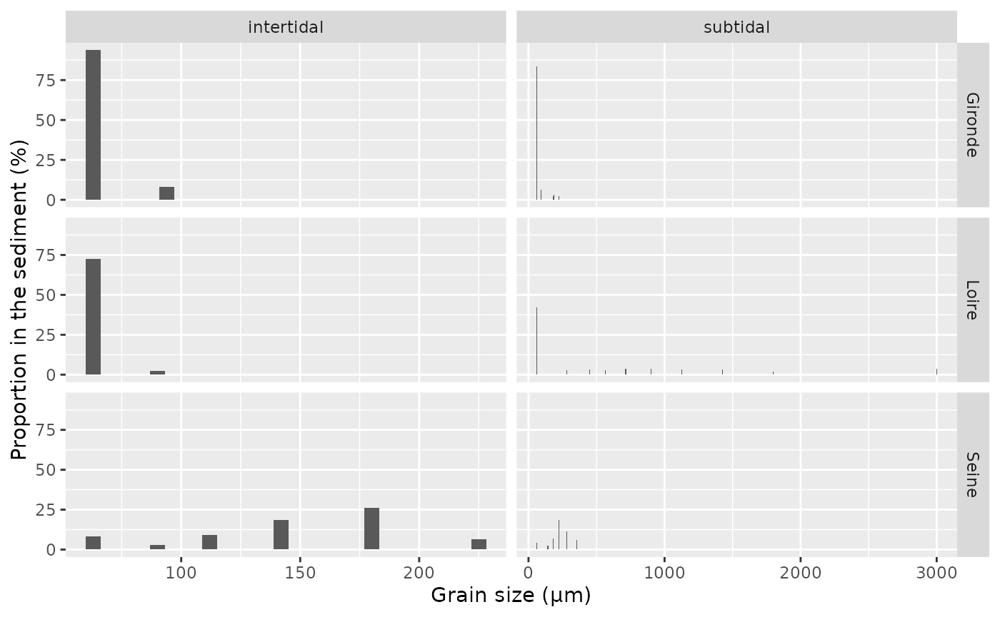

library(esteem.overview)
library(tidyverse, quietly = TRUE)
#> ── Attaching core tidyverse packages ──────────────────────── tidyverse 2.0.0 ──
#> ✔ dplyr 1.1.4 ✔ readr 2.1.5
#> ✔ forcats 1.0.0 ✔ stringr 1.5.1
#> ✔ ggplot2 3.5.2 ✔ tibble 3.3.0
#> ✔ lubridate 1.9.4 ✔ tidyr 1.3.1
#> ✔ purrr 1.1.0
#> ── Conflicts ────────────────────────────────────────── tidyverse_conflicts() ──
#> ✖ dplyr::filter() masks stats::filter()
#> ✖ dplyr::lag() masks stats::lag()
#> ℹ Use the conflicted package (<http://conflicted.r-lib.org/>) to force all conflicts to become errors
data <- esteem.overview::data_sediment |> drop_na(tidal)
data_MO <- data |>
filter(PARAMETRE_LIBELLE == "Matière organique")
data_MO_summarised <- data_MO |>
group_by(ESTUARY, YEAR, tidal) |>
summarise(median_MO = median(RESULTAT))
#> `summarise()` has grouped output by 'ESTUARY', 'YEAR'. You can override using
#> the `.groups` argument.
ggplot_MO <- ggplot(data_MO_summarised) +
aes(x = YEAR, y = median_MO, colour = ESTUARY, shape = tidal, linetype = tidal) +
geom_point() +
geom_line() +
labs(y = "Organic matter (%)", x = NULL)
ggplot_MO
ggsave(plot = ggplot_MO, "../inst/results/data_benthos/sediment/organic_matter_year.jpg")
#> Saving 7.29 x 4.51 in image
data_MO_general <- data_MO |>
group_by(ESTUARY, tidal) |>
summarise(median_MO = median(RESULTAT),
Q1 = quantile(RESULTAT, probs = 0.25),
Q3 = quantile(RESULTAT, probs = 0.75))
#> `summarise()` has grouped output by 'ESTUARY'. You can override using the
#> `.groups` argument.
data_MO_general
#> # A tibble: 6 × 5
#> # Groups: ESTUARY [3]
#> ESTUARY tidal median_MO Q1 Q3
#> <chr> <chr> <dbl> <dbl> <dbl>
#> 1 Gironde intertidal 4.91 4.2 5.62
#> 2 Gironde subtidal 4.64 2.77 5.84
#> 3 Loire intertidal 4.36 2.22 6.03
#> 4 Loire subtidal 2.24 1.52 4.00
#> 5 Seine intertidal 1.28 0.788 3.75
#> 6 Seine subtidal 1.24 0.710 1.73=> grain size composition is similar between years
data_summarised <- data |>
filter(PARAMETRE_LIBELLE != "Matière organique") |>
group_by(ESTUARY, tidal, YEAR, PARAMETRE_LIBELLE) |>
summarise(median_res = median(RESULTAT), .groups = "drop") |>
filter(median_res >= 2)
data_size_resume <- data_summarised |>
arrange(ESTUARY, tidal, YEAR, desc(median_res)) |>
mutate(mid_class = case_when(
PARAMETRE_LIBELLE == "Fraction < 63 µm" ~ 63,
PARAMETRE_LIBELLE == "Fraction de 63 à 80 µm" ~ 71,
PARAMETRE_LIBELLE == "Fraction de 63 à 125 µm" ~ 94,
PARAMETRE_LIBELLE == "Fraction de 80 à 100 µm" ~ 90,
PARAMETRE_LIBELLE == "Fraction de 100 à 125 µm" ~ 112,
PARAMETRE_LIBELLE == "Fraction de 125 à 250 µm" ~ 187,
PARAMETRE_LIBELLE == "Fraction de 125 à 160 µm" ~ 142,
PARAMETRE_LIBELLE == "Fraction de 160 à 200 µm" ~ 180,
PARAMETRE_LIBELLE == "Fraction de 200 à 250 µm" ~ 225,
PARAMETRE_LIBELLE == "Fraction de 250 à 315 µm" ~ 282,
PARAMETRE_LIBELLE == "Fraction de 250 à 500 µm" ~ 375,
PARAMETRE_LIBELLE == "Fraction de 315 à 400 µm" ~ 357,
PARAMETRE_LIBELLE == "Fraction de 400 à 500 µm" ~ 450,
PARAMETRE_LIBELLE == "Fraction de 500 à 630 µm" ~ 565,
PARAMETRE_LIBELLE == "Fraction de 630 à 800 µm" ~ 715,
PARAMETRE_LIBELLE == "Fraction de 800 µm à 1 mm" ~ 900,
PARAMETRE_LIBELLE == "Fraction de 1 mm à 1,25 mm" ~ 1125,
PARAMETRE_LIBELLE == "Fraction de 1,25 à 1,6 mm" ~ 1425,
PARAMETRE_LIBELLE == "Fraction de 1,6 à 2 mm" ~ 1800,
PARAMETRE_LIBELLE == "Fraction de 2 à 2,5 mm" ~ 2250,
PARAMETRE_LIBELLE == "Fraction de 2,5 à 3,15 mm" ~ 2825,
PARAMETRE_LIBELLE == "Fraction de 2 à 4 mm" ~ 3000
))
data_size_resume
#> # A tibble: 123 × 6
#> ESTUARY tidal YEAR PARAMETRE_LIBELLE median_res mid_class
#> <chr> <chr> <dbl> <chr> <dbl> <dbl>
#> 1 Gironde intertidal 2007 Fraction < 63 µm 88.6 63
#> 2 Gironde intertidal 2007 Fraction de 63 à 125 µm 11.1 94
#> 3 Gironde intertidal 2008 Fraction < 63 µm 88.6 63
#> 4 Gironde intertidal 2008 Fraction de 63 à 125 µm 7.24 94
#> 5 Gironde intertidal 2012 Fraction < 63 µm 87.5 63
#> 6 Gironde intertidal 2012 Fraction de 63 à 125 µm 9.02 94
#> 7 Gironde intertidal 2012 Fraction de 125 à 250 µm 2.24 187
#> 8 Gironde intertidal 2016 Fraction < 63 µm 95.5 63
#> 9 Gironde intertidal 2017 Fraction < 63 µm 94.5 63
#> 10 Gironde intertidal 2020 Fraction < 63 µm 98.3 63
#> # ℹ 113 more rows
ggplot_grain_size_gironde <- data_size_resume |>
filter(ESTUARY == "Gironde") |>
ggplot() +
aes(x = mid_class, y = median_res) +
geom_col(position = "dodge") +
facet_grid(rows = vars(YEAR), cols = vars(tidal), scales = "free_x") +
labs(title = "Gironde estuary", x = "Grain size (µm)", y = "Proportion in the sediment (%)")
ggsave(plot = ggplot_grain_size_gironde, "../inst/results/data_benthos/sediment/ggplot_grain_size_gironde.jpg")
#> Saving 7.29 x 4.51 in image
ggplot_grain_size_loire <- data_size_resume |>
filter(ESTUARY == "Loire") |>
ggplot() +
aes(x = mid_class, y = median_res) +
geom_col(position = "dodge") +
facet_grid(rows = vars(YEAR), cols = vars(tidal), scales = "free_x") +
labs(title = "Loire estuary", x = "Grain size (µm)", y = "Proportion in the sediment (%)")
ggsave(plot = ggplot_grain_size_loire, "../inst/results/data_benthos/sediment/ggplot_grain_size_loire.jpg")
#> Saving 7.29 x 4.51 in image
ggplot_grain_size_seine <- data_size_resume |>
filter(ESTUARY == "Seine") |>
ggplot() +
aes(x = mid_class, y = median_res) +
geom_col(position = "dodge") +
facet_grid(rows = vars(YEAR), cols = vars(tidal), scales = "free_x") +
labs(title = "Seine estuary", x = "Grain size (µm)", y = "Proportion in the sediment (%)")
ggsave(plot = ggplot_grain_size_seine, "../inst/results/data_benthos/sediment/ggplot_grain_size_seine.jpg")
#> Saving 7.29 x 4.51 in image
data_summarised <- data |>
filter(PARAMETRE_LIBELLE != "Matière organique") |>
group_by(ESTUARY, tidal, PARAMETRE_LIBELLE) |>
summarise(median_res = median(RESULTAT), .groups = "drop") |>
filter(median_res >= 2)
# data_summarised |>
# distinct(PARAMETRE_LIBELLE)
data_size_resume <- data_summarised |>
arrange(ESTUARY, tidal, desc(median_res)) |>
mutate(mid_class = case_when(
PARAMETRE_LIBELLE == "Fraction < 63 µm" ~ 63,
PARAMETRE_LIBELLE == "Fraction de 63 à 125 µm" ~ 94,
PARAMETRE_LIBELLE == "Fraction de 80 à 100 µm" ~ 90,
PARAMETRE_LIBELLE == "Fraction de 100 à 125 µm" ~ 112,
PARAMETRE_LIBELLE == "Fraction de 125 à 250 µm" ~ 187,
PARAMETRE_LIBELLE == "Fraction de 125 à 160 µm" ~ 142,
PARAMETRE_LIBELLE == "Fraction de 160 à 200 µm" ~ 180,
PARAMETRE_LIBELLE == "Fraction de 200 à 250 µm" ~ 225,
PARAMETRE_LIBELLE == "Fraction de 250 à 315 µm" ~ 282,
PARAMETRE_LIBELLE == "Fraction de 315 à 400 µm" ~ 357,
PARAMETRE_LIBELLE == "Fraction de 400 à 500 µm" ~ 450,
PARAMETRE_LIBELLE == "Fraction de 500 à 630 µm" ~ 565,
PARAMETRE_LIBELLE == "Fraction de 630 à 800 µm" ~ 715,
PARAMETRE_LIBELLE == "Fraction de 800 µm à 1 mm" ~ 900,
PARAMETRE_LIBELLE == "Fraction de 1 mm à 1,25 mm" ~ 1125,
PARAMETRE_LIBELLE == "Fraction de 1,25 à 1,6 mm" ~ 1425,
PARAMETRE_LIBELLE == "Fraction de 1,6 à 2 mm" ~ 1800,
PARAMETRE_LIBELLE == "Fraction de 2 à 4 mm" ~ 3000
))
data_size_resume
#> # A tibble: 31 × 5
#> ESTUARY tidal PARAMETRE_LIBELLE median_res mid_class
#> <chr> <chr> <chr> <dbl> <dbl>
#> 1 Gironde intertidal Fraction < 63 µm 93.7 63
#> 2 Gironde intertidal Fraction de 63 à 125 µm 8.10 94
#> 3 Gironde subtidal Fraction < 63 µm 83.6 63
#> 4 Gironde subtidal Fraction de 63 à 125 µm 6.39 94
#> 5 Gironde subtidal Fraction de 125 à 250 µm 3.26 187
#> 6 Gironde subtidal Fraction de 200 à 250 µm 2.24 225
#> 7 Gironde subtidal Fraction de 160 à 200 µm 2.13 180
#> 8 Loire intertidal Fraction < 63 µm 72.5 63
#> 9 Loire intertidal Fraction de 80 à 100 µm 2.15 90
#> 10 Loire subtidal Fraction < 63 µm 42.2 63
#> # ℹ 21 more rows
ggplot_grain_size <- data_size_resume |>
ggplot() +
aes(x = mid_class, y = median_res) +
geom_col() +
facet_grid(rows = vars(ESTUARY), cols = vars(tidal), scales = "free_x") +
labs(x = "Grain size (µm)", y = "Proportion in the sediment (%)")
ggplot_grain_size
ggsave(plot = ggplot_grain_size, "../inst/results/data_benthos/sediment/sediment_grain_size.jpg")
#> Saving 7.29 x 4.51 in image